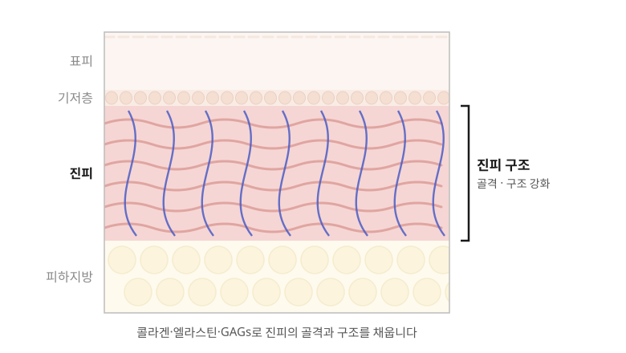

홈 > 피부미용 > 스킨부스터 > ECM
ECM 진피재생약침
무너진 진피의 골격을 다시 세우는 약침
ECM · EXTRACELLULAR MATRIX
무너진 진피의 골격을
다시 채웁니다
ECM(세포외기질)은 콜라겐, 엘라스틴, GAGs 등으로 이루어진 진피의 골격입니다. 30대 중반부터 조금씩 무너져 내리면서 피부 노화가 진행됩니다. 진피재생약침은 이 ECM 성분을 진피에 직접 채워 피부의 구조를 다시 세우도록 돕습니다.
그래서 20대보다는 진피 구조가 약해지기 시작하는 30대 중반 이후에 더 잘 맞는 시술입니다.
피부 탄력은 진피를 받치는 골격에서 시작합니다.

시술 정보
- 시술 시간
- 약 20~30분 (마취 포함)
- 주입 방법
- 레이저·LDM 또는 손주사
- 회복 기간
- 바로 일상생활 가능
- 권장 주기
- 4주 간격, 3~5회
MATERIAL
원료와 면역 반응, 이렇게 관리합니다
진피재생약침은 의료용으로 관리된 돼지의 진피 조직에서 얻은 ECM을 사용합니다. 동물 유래 원료라 면역 반응을 걱정하실 수 있어, 그 원리와 관리 방법을 함께 안내해 드립니다.
- 01 · 원인 면역 반응은 단백질 끝에서 면역 반응을 일으키는 부분은 단백질 사슬 양쪽 끝에 붙어 있는 텔로펩타이드(telopeptide)입니다.
- 02 · 제거 초임계 이산화탄소 공법 보통은 산이나 효소로 이 부분을 없애지만, 진피재생약침은 초임계 이산화탄소 공법으로 메디컬 등급에 준하는 수준까지 제거했습니다. 많은 기술력과 노하우가 필요한 공정입니다.
- 03 · 보존 재생 성분은 그대로 면역 반응 가능성을 낮추면서도 진피 조직이 가진 콜라겐, 엘라스틴, GAGs 같은 재생 성분은 그대로 살렸습니다.
COMPARE
스킨부스터, 목적에 맞게 고릅니다
한 가지 스킨부스터로 모든 고민을 해결하기보다, 각 성분이 닿는 곳과 목적을 이해하고 피부에 맞게 고르고 조합합니다.
| 시술 | 주요 타깃 | 핵심 목적 | 이런 분께 |
|---|---|---|---|
| PDRN·엑소좀 | 진피층 | 콜라겐 생성 촉진 | 피부 탄력과 재생, 미백까지 함께 관리하고 싶은 분 |
| PLLA | 진피층 | 콜라겐 생성 유도 · 볼륨 | 서서히 차오르는 볼륨과 탄력을 원하는 분 |
| 케라틴 ANK 약침 | 기저층 | 상피·내피세포 정상화 | 피부 장벽이 약해 예민하고 트러블이 잦은 분 |
| 알트코어 | 세포 · 미토콘드리아 | 세포 에너지 및 기능 개선 | 피부 세포 건강과 기미가 고민인 분 |
| ECM 진피재생약침 (지금 보는 시술) | 진피 구조 | 진피의 골격 · 구조 강화 | 진피가 약해지기 시작하는 30대 중반 이후 |
PROCESS
시술 과정
- STEP 1피부 분석야누스프로로 탄력, 주름, 피부 나이를 확인합니다.
- STEP 2상담알레르기 여부를 확인하고 시술 계획을 세웁니다.
- STEP 3세안 · 마취세안 후 마취 크림을 발라 불편감을 줄입니다.
- STEP 4주입어븀야그 레이저와 LDM을 이용하거나 손주사로 고르게 주입합니다.
- STEP 5진정 · 마무리피부를 진정시키고 시술 후 주의사항을 안내합니다.
- 30대 중반 이후 탄력이 눈에 띄게 떨어진 분
- 피부가 얇아지고 잔주름이 늘어난 분
- 피부가 쉽게 처지고 힘없어 보이는 분
- 피부 속부터 탄탄한 구조를 원하는 분
CAUTION
시술 후 주의사항
- 01알레르기 체질이거나 돼지 유래 성분에 민감한 적이 있다면 시술 전 꼭 알려 주세요.
- 02시술 당일에는 가벼운 세안만 하시고, 메이크업은 다음 날부터 해 주세요.
- 03주입 자국, 가벼운 붓기나 붉음이 생길 수 있으며 대부분 며칠 안에 가라앉습니다.
- 04시술 후 약 1주일간 사우나, 찜질방, 과격한 운동, 음주는 피해 주세요.
- 05시술 부위가 심하게 붓거나 가렵고, 붉음이 오래가면 바로 한의원으로 연락해 주세요.
※ 시술 효과와 유지 기간은 피부 상태에 따라 개인차가 있습니다.
FAQ
자주 묻는 질문
Q. ECM은 어떤 성분인가요?
ECM(세포외기질)은 세포와 세포 사이를 채우며 피부를 받쳐 주는 구조물입니다. 콜라겐, 엘라스틴, GAGs 등으로 이루어져 진피의 골격 역할을 합니다.
Q. 돼지 유래 원료인데 면역 반응은 괜찮나요?
면역 반응을 일으키는 텔로펩타이드를 초임계 이산화탄소 공법으로 메디컬 등급에 준하는 수준까지 제거한 원료를 사용해 면역 반응 가능성을 낮췄습니다. 다만 알레르기 체질이거나 돼지 유래 성분에 민감한 적이 있다면 상담 시 꼭 알려 주세요.
Q. 20대도 받을 수 있나요?
받을 수는 있지만, 진피의 ECM이 무너지기 시작하는 30대 중반 이후에 더 잘 맞는 시술입니다. 20대라면 피부 상태에 맞는 다른 스킨부스터를 먼저 권해 드릴 수 있습니다.
Q. 다른 스킨부스터와 무엇이 다른가요?
PDRN이나 PLLA가 피부가 콜라겐을 만들도록 돕는 방식이라면, 진피재생약침은 진피의 골격을 이루는 성분 자체를 채워 구조를 다시 세우는 데 초점을 맞춥니다.